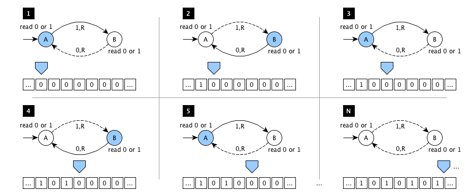
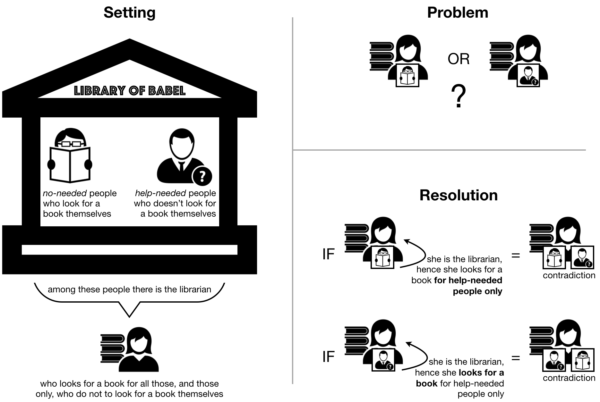

These lecture notes introduce the notion of computability and the computational cost of algorithms. The historic hero introduced in these notes is Alan Turing, considered the father of the Theoretical Computer Science and of the Artificial Intelligence. His work on a particular model of computation, known as the Turing machine, had been the main tool for highlighting the possibilities and the limits of automatic computation and, more in general, of the modern electronic computer.
Copyright notice. This work is licensed under a Creative Commons Attribution 4.0 International License. You are free to share (i.e. copy and redistribute the material in any medium or format) and adapt (e.g. remix, transform, and build upon the material) for any purpose, even commercially, under the following terms: attribution, i.e. you must give appropriate credit, provide a link to the license, and indicate if changes were made. You may do so in any reasonable manner, but not in any way that suggests the licensor endorses you or your use. The licensor cannot revoke these freedoms as long as you follow the license terms.
Historic hero: Alan Turing
Alan Mathison Turing (shown in ) was a computer scientist, even if his works spanned several disciplines including mathematics, logic, philosophy, and biology. He is considered the father of the Theoretical Computer Science and of the Artificial Intelligence, due to its frontier contributions that provided his theoretical machine, that have been named after him, and his studies on the relation between electronic computers and intelligence , which included the thought experiment known as Turing test. In addition to that, he was also one of the key figures behind the decryption of Enigma, the cypher machine used by Nazi Germany for protecting communications – story that has been recently portrayed as a movie by Morten Tyldum's The Imitation Game.
In 1936, Turing developed its machine so as to answer a quite important issue related with Hilbert's decision problem, which asks about the possibility of developing an algorithm for deciding if a first-order logic formula is universally valid or not – problem that was also analysed at the same time by Alonzo Church, by addressing it from a totally different (but pragmatically equivalent) perspective compared with Turing's approach. The machine proposed by Turing was only theoretical, which means that he did not build it physically – while, recently, several people have provided physical prototypes of Turing's idea, such as the one shown in .
Broadly speaking, the Turing machine can be used to simulate any algorithm by means of a quite simple set of tools. In fact, it is composed of an infinite memory tape containing cells. Each cell can contain a symbol (e.g. either 0 or 1 in the physical prototype provided in , where 0 is used as the blank symbol and it is assigned to all the cells in advance) that can be read and written by the head of the machine. The state of the machine at a certain time is recorded as well (that describe the possible operations that can be done at the current stage), and the moves of the machine are defined by using a finite table of instructions, where each instruction says what to do (write a new symbol, move the head either left or right, go to a new state) according to the current state and the symbol currently under the head. In addition, an initial state and zero or more final states are provided, so as to know from where to start the process, and when to finish it.
For instance, in , there is the representation of a table of instructions for a simple Turing machine, having A as initial state, no final states, and using only 0 and 1 as symbols to write on the tape. Each row in the table represents a particular instruction. For instance, the first row says that being in A, if the head reads 0 or 1 on the tape, then 1 is written down, the head is moved one cell to the right, and the new state of the machine becomes B.
Current state
Tape symbol
Write symbol
Move tape
Next state
A
0 or 1
1
right
B
B
0 or 1
0
right
A
A table of instructions of a very simple Turing machine, having initial state A, with no final states.
The table of instructions of a Turing machine can be also represented graphically by using labelled circles for representing states, and arrows that point to the next state of the current one if a particular symbol is read on the tape. If an arrow is followed – and, thus, the state is changed – the symbol indicated in its label is written down on the table, and the head of the machine is moved according to the direction (i.e. left or right) indicated. For instance, in , it is shown the execution of the Turing machine related to the table of instructions introduced in . In particular, this Turing machine has the characteristic of running forever – it will never stop its execution – since it writes several 1s separated by 0s indefinitely. Practically speaking, this Turing machine demonstrates that it is possible to develop algorithms that run forever without ever ending their execution.

A graphical representation of the execution of the Turing machine implementing the rules introduced in . In the various figures, the blue polygon represents the head of the machine, which is positioned in a specific cell of the tape. The blue circle represent the current state, while the solid arrow depicts the next state that is reached once the symbol in the label of the solid arrow is written in the cell pointed by the head, and the head is finally moved in the direction indicated on the label (where R stands for right).
While the Turing machine is a quite simple tool, it enables one to model computation in the broad sense. While it has not been proposed by Turing as a sketch for the development of electronic computers, its theoretical properties basically apply also to real computing machines. Thus, anything that can be computed by a Turing machine can be computed as well by an electronic computer, and it has been used to prove the intrinsic limitations on the power of mechanical computation.
Computational cost of an algorithm
In the previous lecture, we have defined what is an algorithm and the relation that exists between algorithms and computers. While we have just seen a bunch of constructs available in ThyMopani for defining algorithms (and other will be introduced in the following lectures), in this lectures we have already seen, in , how even a simple machine (simulating an algorithm) can compute indefinitely, other machines could compute a result in a reasonable finite time, and, finally, algorithms can even spend an exaggerated time (even if still finite) to return a result. Knowing how much time, indicatively, an algorithm needs for returning a result is something that can be useful to know.
This issue is the core topic of one of the most important branches of the theory of computation, i.e. the computational complexity theory. The research in this field aims at classifying computational problems – i.e. problems that can be solved algorithmically by a computer – according to a specific hierarchy of classes that express the difficulty in solving such problems.
An important subfield of the computational complexity theory is the analysis of algorithms. Analysing an algorithm means to understand the amount of time, storage and other resources that are needed to execute such algorithm. In particular, usually, this analysis focuses on finding a particular mathematical function that relates the input of an algorithm with the number of instructions that are run to return the final result from that input. The smaller such function is, the more efficient the algorithm will be.
It is worth mentioning that the measure provided by such function is not precise, since it is only an upper bound of the actual performance. However, it is enough for providing an indicative idea of the amount of time needed for executing a particular algorithm on a certain input.
We do not want to introduce all the theoretical principles and the formal mathematical tools for addressing such analysis, since it is out of the scope of the course. However, the message that we would like to reinforce in this section is that the efficiency of an algorithm is directly derived and guided by the way sich algorithm has been developed. It is possible to develop two different algorithms addressing the same computational problem that take two drastic different times for returning the result. In the following lectures, we will introduce some of these algorithms and we will provide some intuitions for understanding why one algorithm is more efficient of another.
Can we compute everything?
The main question one could ask after reading all the material introduced in the previous sections would be: can we use algorithms for computing whatever we want? In other words: there exists a limitation on what we can compute? Or, even: is it possible to define a computational problem that cannot be solved by any algorithm?
In the case of the Computer Science domain, as well as of other Mathematical-like sciences, one of the most used approaches to demonstrate that something cannot exist is to come to a paradoxical and self-contradictory situation in which, for instance, the existence of an algorithm contradicts its existence itself, by applying a reductio ad absurdum approach. This kind of argument seeks to establish a contention by deriving an absurdity from its denial, thus arguing that a thesis must be accepted because its rejection would be untenable, and, eventually, generates paradoxes.
The use of paradoxes has been largely used in logic in the past. While they are a funny story to tell for teaching, they are also powerful tools for showing limits or constraints of a particular formal aspect of a field or situation. For instance, one of the most famous paradoxes in mathematics is the Russell paradox, discovered by Betrand Russell in 1901. It was one of the most important discoveries of the beginning of the twentieth century, since it has proved that the current set theory proposed by Georg Cantor, and used as foundation for Gottlob Frege's work on the definition of the basic laws of arithmetic, led to a contradiction and, thus, it invalidated the set theory and the work done by Frege – that was in print when Russell communicated his discovery to him. A variation to that paradox could be formulated as follows.
Librarian paradox: In the Library of Babel there are people of two different kinds. The first kind of people – named no-help – are those who look for a book themselves. The other kind of people – named help-needed – are those who actually do not look for a book themselves, and thus they need help for doing it. One of all the people in the library is the librarian – who looks for a book for all those, and those only, who do not to look for a book themselves (i.e. the help-needed people). The question is, does the librarian looks for a book herself?
Resolution: If the librarian is a person who looks for a book herself then she is a no-help person. However, she, as the librarian, only helps people that do not look for a book themselves. Hence, she would be also an help-needed person, which is self-contradictory: if the librarian is a no-help person, then she is an help-needed person. In addition, if the librarian is a person who does not look for a book herself then she is a help-needed person. Hence she, the librarian, looks for a book herself. And this is the second contradiction: if the librarian is a help-needed person, then she is a no-help person.

A graphical representation of the librarian paradox, which is a puzzle derived from Russell's paradox.
One of the most attractive problems that were studied in Computer Science in the past was part of the 23 open mathematical problems that David Hilbert proposed in 1900. It is known as halting problem, which is the problem of determining if a particular algorithm run with a specific input will terminate its execution at some point or it will run forever. In the previous lecture, we have developed our first algorithm, which has been defined in a way that allows it to return always a value as outcome – which confirms that we can develop algorithms that terminate. In addition, as demonstrated in , we have shown also an algorithm (implemented by the Turing machine summarised in ) that runs indefinitely. Thus, having an approach that allows us to discover systematically if an algorithm will terminate or will not is a great utility to have, since it would enable the identification of computationally-ill algorithms.
Alan Turing's development of his machine was done exactly for answering to such question, i.e. if we can develop a Turing machine (i.e. an algorithm) which is able to certainly decide if another machine will terminate its execution or will not. An approximation of the solution that Turing provided is introduced as follows, and it is entirely based on a reductio ad absurdum argument, which is very close to the one introduced in for resolving the librarian paradox.
Suppose we have a def does_it_halt(an_algorithm) algorithm, which returns True if the execution of an_algorithm() terminates, while it returns False otherwise. This is just a hypothetical algorithm: we are supposing that we can develop it in some way, but we do not provide its ThyMopali description, since the goal is to check if such does_it_halt can be developed or not.
Then we reuse the does_it_halt algorithm for developing a new algorithm, that is presented in ThyMopani in . In particular, this new algorithm takes another algorithm as input and, if the input algorithm stops, then it runs forever. Otherwise, if the input algorithm does not terminate, then it stops.
def a_simple_algorithm(another_algorithm): if does_it_halt(another_algorithm): run_forever() else: return
The pseudocode of an algorithm that runs forever if the execution of another_algorithm() stops, and it stops otherwise. Note that the support algorithm run_forever (that never stops) can be easily developed. In fact, in , we have shown a simple Turing machine that implements such behaviour.
Now, the question is what happens if we try to execute a_simple_algorithm(a_simple_algorithm)? We have two possible situations:
if does_it_halt says that a_simple_algorithm stops (i.e. does_it_halt(a_simple_algorithm) returns True), then a_simple_algorithm run forever;
if does_it_halt says that a_simple_algorithm runs forever (i.e. does_it_halt(a_simple_algorithm) returns False), then a_simple_algorithm stops.
Hence, whatever is the behaviour of a_simple_algorithm, it always generates a contradiction. This means that the main algorithm that is used in its body, i.e. does_it_halt, cannot be developed. Thus, the answer to the halting problem mentioned before is that the algorithm for checking if another one stops cannot exist.
This results had a disruptive effect on the perception of computational abilities at large. In practice, Turing's machines and their analyses posed clear limits to what we can compute, and they enabled him to explicitly state that there are specific computational problems, such as the halting problem mentioned in this section, that cannot be solved.
Exercises
Write the table of instructions of a Turing machine with three states – A (initial state), B and C (final state) – such that, once reached the final state, only the cells immediately on the left and on the right of the initial position of the head of the machine will have the value 1 specified. The final state must not have any next cell specified in the table.
References
Rescher, N. (2017). Reductio ad Absurdum. Internet Encyclopedia of Philosophy. http://www.iep.utm.edu/reductio/ (last visited 7 November 2017)